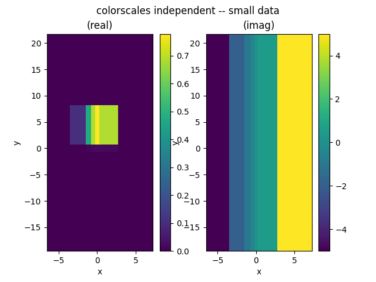
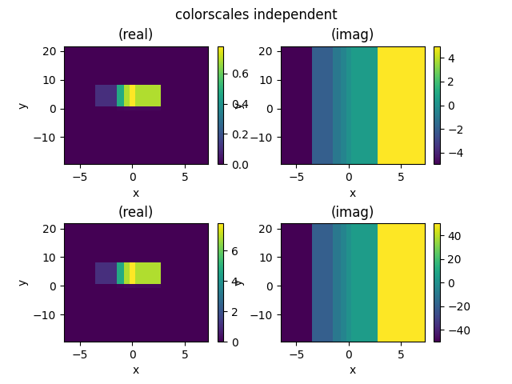
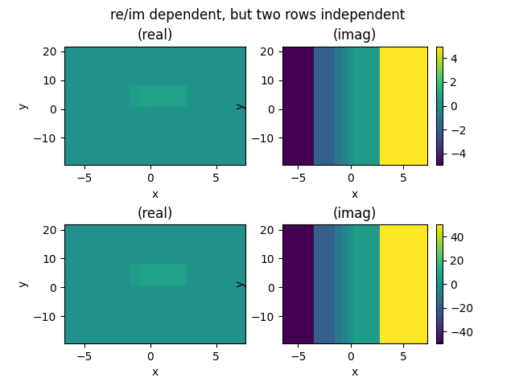
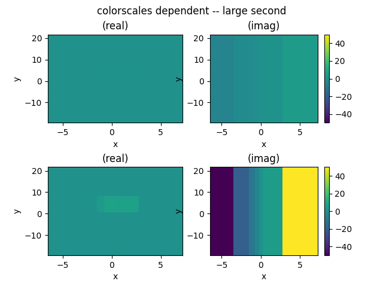
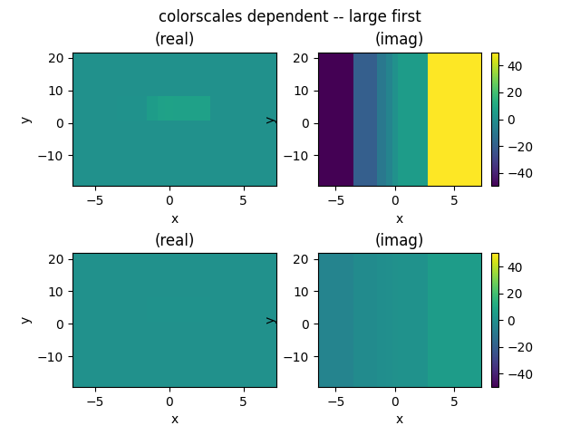
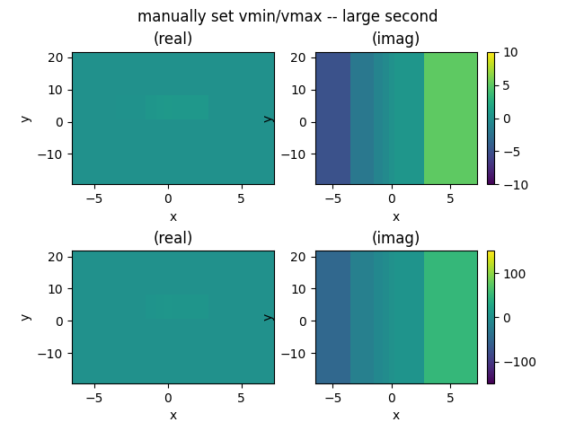

Note
Go to the end to download the full example code
Unevenly spaced data¶
Basic demonstration of pcolor, which can deal with unevenly spaced data
Note
Right now, we just do this with real/imaginary, but in principal, it should be easily possible to extend this to use domain coloring (and to use it in the main DCCT method)
- 
- 
- 
- 
- 
- 
import pyspecdata as psp
import matplotlib.pylab as plt
from numpy import r_
def new_figure_and_grid():
fig = plt.figure()
gs = plt.GridSpec(2, 2, hspace=0.5)
ax_list = []
for j in range(2):
for k in range(2):
ax_list.append(fig.add_subplot(gs[j, k]))
return ax_list
run_to_checkpoint = 7 # allows us to run to different checkpoints. If
# everything is working correctly, this should go up to 5
x = psp.nddata(r_[-5, -2, -1, -0.5, 0, 0.5, 5], "x")
y = psp.nddata(3 * r_[-5, -2, -1, -0.5, 0, 0.5, 5], "y")
z1 = plt.exp(-((y - 2) ** 2) - (x - 0) ** 2 / 2) + 1j * x
z2 = 10 * z1
# {{{ plot the smaller data
plt.figure()
plt.suptitle("colorscales independent -- small data")
mpbl = z1.pcolor(scale_independently=True)
# }}}
if run_to_checkpoint > 1:
# {{{ plot the larger data
plt.figure()
plt.suptitle("colorscales independent -- large data")
mpbl = z2.pcolor(scale_independently=True, mappable_list=[])
# }}}
if run_to_checkpoint > 2:
# {{{ independent
ax_list = new_figure_and_grid()
plt.suptitle("colorscales independent")
z1.pcolor(scale_independently=True, ax1=ax_list[0], ax2=ax_list[1])
mpbl = z2.pcolor(scale_independently=True, ax1=ax_list[2], ax2=ax_list[3])
# }}}
if run_to_checkpoint > 3:
# {{{ independent rows, dependent columns
ax_list = new_figure_and_grid()
plt.suptitle("re/im dependent, but two rows independent")
z1.pcolor(ax1=ax_list[0], ax2=ax_list[1])
z2.pcolor(ax1=ax_list[2], ax2=ax_list[3])
# }}}
if run_to_checkpoint > 4:
# {{{ small first, then large
ax_list = new_figure_and_grid()
plt.suptitle("colorscales dependent -- large second")
mpbl = z1.pcolor(ax1=ax_list[0], ax2=ax_list[1])
mpbl = z2.pcolor(mappable_list=mpbl, ax1=ax_list[2], ax2=ax_list[3])
# }}}
if run_to_checkpoint > 5:
# {{{ large in first row, then small in second row
ax_list = new_figure_and_grid()
plt.suptitle("colorscales dependent -- large first")
mpbl = z2.pcolor(ax1=ax_list[0], ax2=ax_list[1])
z1.pcolor(mappable_list=mpbl, ax1=ax_list[2], ax2=ax_list[3])
# }}}
if run_to_checkpoint > 6:
# {{{ manually set vmin and vmax
ax_list = new_figure_and_grid()
plt.suptitle("manually set vmin/vmax -- large second")
z1.pcolor(
ax1=ax_list[0],
ax2=ax_list[1],
vmin=-10,
vmax=10,
)
z2.pcolor(
ax1=ax_list[2],
ax2=ax_list[3],
vmin=-150,
vmax=150,
)
# }}}
plt.show()
Total running time of the script: (0 minutes 4.533 seconds)